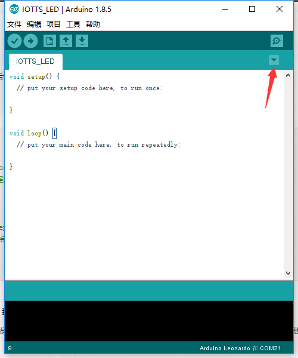
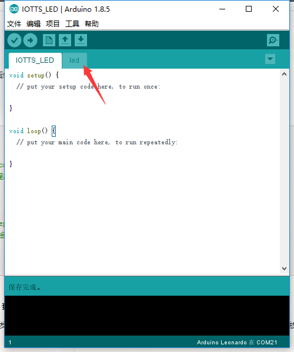
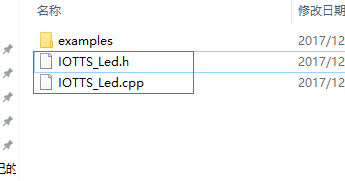
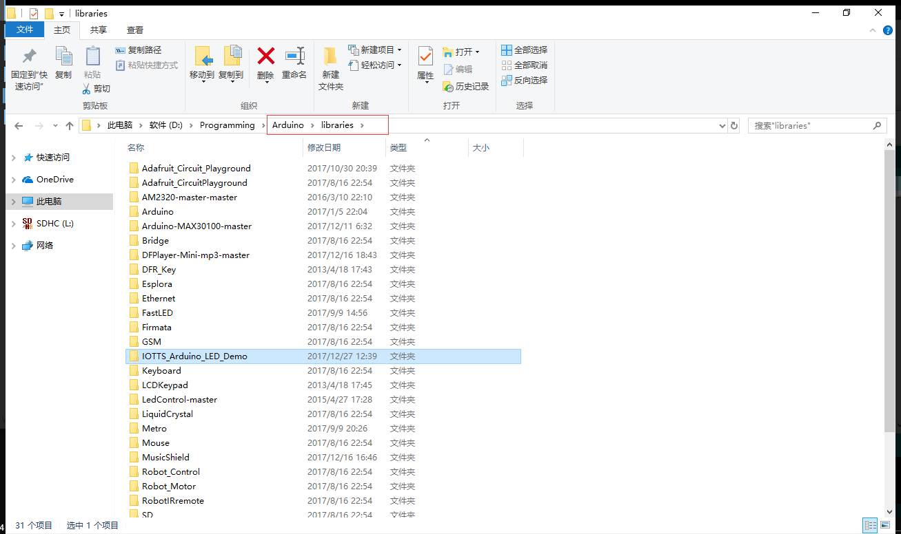
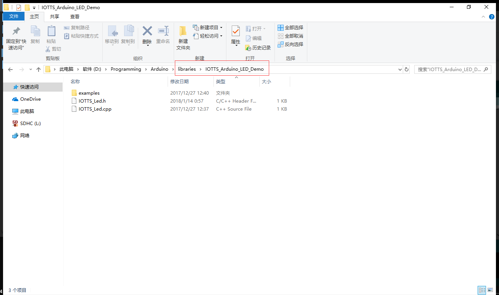
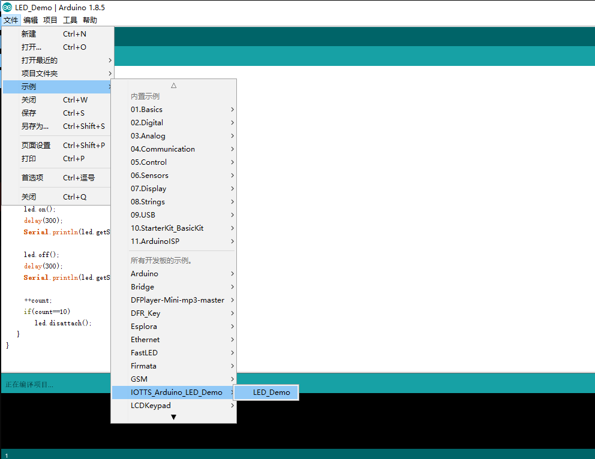
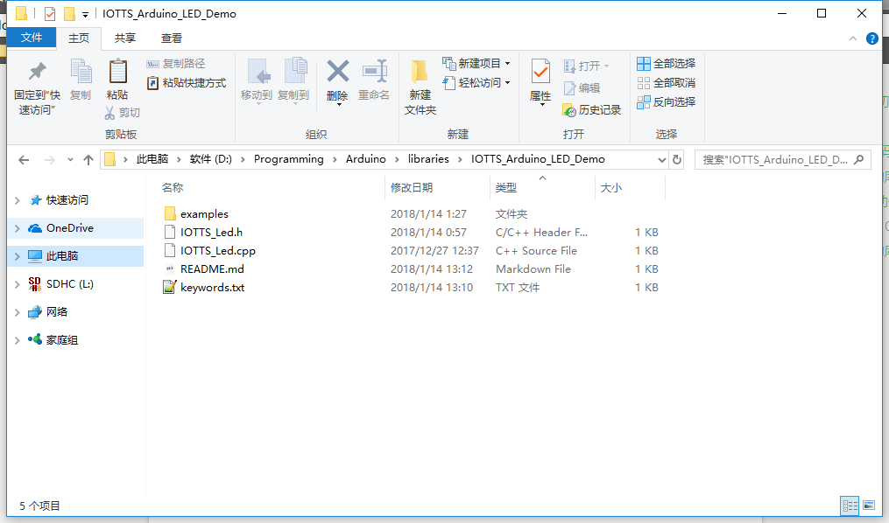

前言
Arduino作为比较火的开源开发板，其丰富的库可以大大缩短开发周期,Arduino编程软件为Arduino IDE,编程思路和我们平常使用的IDE有所不同，Arduino编程没有main函数，因为好多东西都被隐藏了。一直想搞清楚，以便编写自己的库文件。下面是一些在网上搜集到的关于如何建立自己的库文件
Arduino工程的初步认识
1、目录规范
首先创建一个空的工程，先按下ctrl+s保存一下。这个时候弹出对话框，命名工程。假如命名为IOTTS_LED，并保存在 我自己的Arduino工作目录下 E:\arduino\IOTTS_Arduino\
于是IDE会自动帮我们在IOTTS_Arduino下创建1个文件夹，并将sketch(IOTTS_LED.ino)主文件放在里面，而且主文件和文件夹同名。
1 | IOTTS_Arduino |
2、主文件代码框架规范
每一个Arduino程序（Sketch）都有1个主文件，后缀为 .ino ，它是程序的setup 函数和 loop函数所在的文件。
代码框架如下：
1 | void setup() { |
有C/C++开发经验的人看到这个程序框架会愣住：我的main函数去哪里呢？
Arduino 为了让更多的人能够使用Arduino平台开发出好玩的东西出来，绞尽脑汁降低门槛，它隐藏了程序的细节，使得开发者将注意力放在实现上。
但我觉得这样适得其反。下面是Arduino程序的实质结构（这都是Arduino IDE 隐藏了的细节）。
1 | #include"Arduino.h" |
开始创建自己的库文件
有时会程序越写越大，越大越乱。多文件管理可以解决这个麻烦。Arduino程序叫 Sketch。 一个Sketch可以有多个源代码文件，分离的源代码便于管理。但只有 1个 主文件，也就是存放 setup loop函数的文件。
让主文件用来控制程序的主要逻辑部分，而把具体的细节封装成单个模块，存放在其他的文件中，这样方便管理。那么怎么创建其他的文件呢？？？
下面开始介绍。
1.使用IDE自动处理机制完成创建
点击下图中标记的按钮，选择第一个选项 【新建标签】，输入文件名即可。

这样我们的工程就有了2个文件了。如下，一个主文件和一个名为LED的文件。这就是最简单的多文件方法。

我不推荐使用这种方法，这是为没有C/C++编程经验的小白准备的，他们不懂函数定义 后还要声明才能使用，不懂得头文件的包含。这些都被Arduino IDE帮他们做了。IDE的具体处理是:
在编译前期，Arduino IDE会将无后缀的文件 和 主文件合并成为1个文件，效果就像是写在主文件中一样。并在主文件第一行添加 #include "Arduino.h"。 Arduino.h是 Arduino程序的核心头文件。然后，IDE将扫描合并后文件的函数定义，并对已经定义的函数添加函数的声明。（这个就是为什么即便我们定义的函数不声明也能编译通过的原因了）
但是官方明确说了，这个自动插入函数声明的机制是不完美的！所以我也建议大家养成手动声明函数的习惯。
1 | Also, this generation isn't perfect: it won't create prototypes for functions that have default argument values, or which are declared within a namespace or class. |
2.使用传统的 C/C++分离式文件
一般程序员都会将程序组织成源文件与库文件的形式，方便调用和代码修改,也就是 .c 和.h 或者 .cpp 和 .h 。前者是C语言风格，后者是对会使用C++来说的。官方貌似推崇我们使用C++编写Arduino代码，无论是Arduino 的从标准库，还是教程中，都透露出一股强烈的OOP气息。所以我下面使用C++风格来举例子。
例如我们想要将LED的控制封装成一个模块。
一开始我们需要创建2个文件 ：IOTTS_Led.cpp 、 IOTTS_Led.h 创建方式基本上分为两种：一是自己手动创建，二是利用上面提到的新建标签的方式创建

然后是想清楚我们需要让提供LED控制的哪些操作。发挥你的想象力时候到了。规定操作后，我们先写出头文件，然后写出实现，最后在主文件中使用这个模块。在主文件中使用
#include"IOTTS_Led.h"预处理指令包含。
IOTTS_Led.h内容如下：
1 | /******************* |
IOTTS_Led.cpp内容如下:
1 | /***************** |
实例化程序内容如下：
1 | /********************** |
让它成为自己的库
如果上面的模块你觉得好用，符合自己的使用习惯，而且经常要用到，那么你可以将它变成你自己的库文件,这样以后就可以直接拿来用啦。
Arduino的扩展库都是放在 libraries目录下的。

所以我们需要在这个目录下创建一个文件夹，比如上面的例子是LED控制，于是我创建了IOTTS_Arduino_LED_Demo文件夹，最好命名和官方的区分开。然后把写好的.cpp 和 .h文件拷贝到里面去。

这样我们 的Sketch就变成了下面这样，是不是很简洁干净呢。
1 | #include<IOTTS_Led.h> //注意，由于LED控制模块已经是标准库了，所以使用尖括号<> 包含 |
也可以新建一个examples放入我们刚刚验证过的例程，目录结构按照文章开始讲的创建，这样就可以像加载官方历程一样加载自己的例程了。

一般和自己建立的库一起的还有个 keywords.txt文件，这个是什么用呢？ 其实它没有太大的实用性，只是为了配置自定义库的语法高亮。让我们自己的库能在IDE下显示不同的颜色而已。如果不配置，Arduino IDE不能渲染出颜色的。
下面是keywords.txt 的内容，其中#开头的是注释，完全可以不写。格式：word【tab】DESCRIPTION
word就是你要高亮的关键字接着1 个 tab 键 ，然后就是DESCRIPTION。
DESCRIPTION可以取的值：
KEYWORD1 高亮类名
KEYWORD2 高亮方法名
LITERAL1 高亮常量
注意中间使用的是 1 个 tab 键 隔开的
1 | #class (KEYWORD1) |
来一张做好的库文件图：

文章中涉及到的源代码: